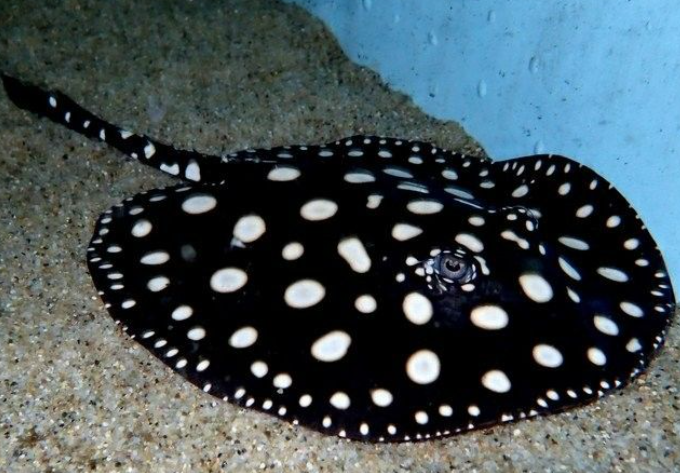

Habitat

Stingrays depend on very specific habitats to survive, usually living in shallow coastal waters, sandy ocean floors, and coral reef environments. These areas provide them with food, protection, and places to bury themselves from predators.
Unfortunately, human activity is slowly destroying these habitats. Pollution, overfishing, and coastal development are damaging ocean ecosystems and reducing safe spaces for stingrays to live. As their habitats shrink, stingray populations become more vulnerable and struggle to survive.
Protecting marine environments is extremely important. If we continue to harm oceans at the current rate, many species like stingrays may lose their natural homes completely.